<!DOCTYPE html>
<html>
    <head>
        <meta charset="UTF-8">
        <meta name="apple-mobile-web-app-capable" content="yes">
        <meta name="apple-mobile-web-app-status-bar-style" content="black-translucent">
        <meta name="viewport" content="width=device-width, initial-scale=1.0">
        <link rel="icon" href="icon/icon.png" type="image/png">
        <link rel="apple-touch-icon" href="icon/icon.png">
        <link rel="stylesheet" type="text/css" href="./css/game.css">
        <link rel="stylesheet" type="text/css" href="./fonts/gamefont.css">
        <title>Shunji Heights</title>
        <style>


/*
body, html {
    width: 320px;
    height: 320px;
    margin: 0;
    padding: 0;
    background-color: #ffffff;
    overflow: hidden;
    position: fixed;
    transform: translate(-50%, -50%);
    top: 50%;
    left: 50%;
} */

body, html {
    width: 100%;
    height: 100%;
    margin: 0;
    padding: 0;
    background-image: url('background.png');
    background-size: 10%;
    background-repeat: repeat;
    background-position: center center;
    overflow: hidden;
    position: fixed;
    top: 0;
    left: 0;
}


            /* 로고 스타일 */
            .logo {
                position: fixed;
                left: 50%;
                transform: translateX(-50%);
                opacity: 0.5; /* 불투명도 50% */
                z-index: 1000; /* 다른 요소 위에 표시 */
                max-width: 200px; /* 로고의 최대 너비 설정 */
                height: auto; /* 자동 높이 조절 */
            }

            .top-logo {
                top: 20px; /* 화면 상단에서 20px 떨어진 위치 */
            }

            .bottom-logo {
                bottom: 20px; /* 화면 하단에서 20px 떨어진 위치 */
            }

            /* 반응형 디자인을 위한 추가 조정 (선택 사항) */
            @media (max-width: 768px) {
                .logo {
                    max-width: 125px; /* 작은 화면에서 로고 크기 축소 */
                }
            }

#gameCanvas {
    image-rendering: auto !important;

    /* 기본 데스크탑 설정 */
    /*transform: scale(1.4815);*/
    /*transform-origin: center;*/  /* 중심을 기준으로 확대 */

    
        /* /m 모바일 설정 */
     /* transform: scale(1);*/
      /*  transform-origin: center;*/  /* 중심을 기준으로 확대 */
    
}


        </style>
        
        
    </head>
    <body style="background-color: black">
       <!-- 상단 중앙 로고 -->
       <!---->

       <!-- 하단 중앙 로고 -->
       

        <script type="text/javascript" src="./js/libs/socket.io.js"></script> 
<div style="width:640px; height:640px">
        <div id="text_zone"></div>

        <script type="text/javascript" src="js/main.js"></script>
      </div>
    </body>
    <script>
        // 화살표 키로 인한 스크롤 방지
        window.addEventListener('keydown', function(e) {
          const keys = ['ArrowUp', 'ArrowDown', 'ArrowLeft', 'ArrowRight'];
          if (keys.includes(e.key)) {
            e.preventDefault();
          }
        });
      </script>

</html>

